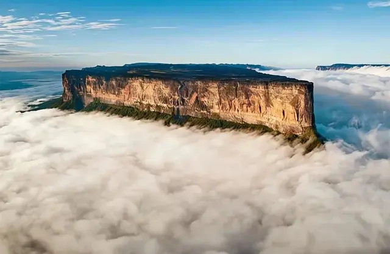

Data
- Country:
- Venezuela
- State:
- Bolívar
- Area:
- 30,000 sq km
- Attraction:
- Angel Falls
- Languages:
- Spanish, Pemon
- Decreed:
- June 12, 1962
- Time Zone:
- UTC-4
- Guy:
- Natural
Weather
- Temperature:
- Conditions:
- Partly Cloudy
- Wind:
- Wind Chill:
